Café Con Palito
¡Bienvenido a Café con Palito!
Somos un equipo de trabajo que busca el desarrollo académico y profesional de sus integrantes.
Nuestro objetivo es crear un ambiente de aprendizaje y colaboración para todas las personas que desean aprender y crecer en el mundo de la programación.
Surgimos como equipo cuando empezamos a estudiar el CFGS Desarrollo de Aplicaciones Multiplataforma (DAM) durante el curso 2021-2022 en el IES Augusto González de Linares
En nuestro tiempo libre nos juntábamos para tomar un café y hablar sobre las clases, nuestra broma era que el día que la máquina de café diera palitos, sería un día especial. Ya que esta nunca daba palitos.
En cuanto tuvimos la oportunidad de crear un proyecto en común, decidimos que nuestro nombre de equipo sería Café con Palito, para invocar a la fortuna.
¡Bienvenido a Café con Palito!
Somos un equipo de trabajo que busca el desarrollo académico y profesional de sus integrantes.
Nuestro objetivo es crear un ambiente de aprendizaje y colaboración para todas las personas que desean aprender y crecer en el mundo de la programación.
Surgimos como equipo cuando empezamos a estudiar el CFGS Desarrollo de Aplicaciones Multiplataforma (DAM) durante el curso 2021-2022 en el IES Augusto González de Linares
En nuestro tiempo libre nos juntábamos para tomar un café y hablar sobre las clases, nuestra broma era que el día que la máquina de café diera palitos, sería un día especial. Ya que esta nunca daba palitos.
En cuanto tuvimos la oportunidad de crear un proyecto en común, decidimos que nuestro nombre de equipo sería Café con Palito, para invocar a la fortuna.


El proyecto consiste en desarrollar aplicaciones para mejorar el cálculo mental en alumnos de 1º a 4º de la ESO, con niveles de dificultad ajustados por curso. Incluirá ejercicios como divisiones simples, cálculo de restos y el uso del algoritmo de Euclides para el máximo común divisor. Además, las aplicaciones deberán ser accesibles y fáciles de usar.
Lecciones Aprendidas
- Toma de Requisitos
- Trabajo en equipo
- Gestión de recursos y tiempo
- Diseño UX/UI
- Base de Datos Relacionales
Tecnologías Aprendidas
- MySQL
- Docker
- Java Swing
- JDBC
- JUnit
- Maven
El proyecto busca crear un clon de Steam, una plataforma digital para comprar, descargar y gestionar videojuegos. Incluye funciones clave como cuentas de usuario, tienda virtual y descarga automática de juegos. El enfoque será ofrecer una interfaz intuitiva, segura y escalable, compatible con múltiples dispositivos.
Lecciones Aprendidas
- Aplicaciones Cliente-Servidor
- Despliegue en Cloud
- Diseño de Videojuegos
- GitFlow
Tecnologías Aprendidas
- PostgreSQL
- Sockets
- JavaFX
- Hibernate
- AWS
- Google Cloud
Este proyecto busca inspirar y motivar a las personas mediante contenido positivo, ayudando a superar desafíos diarios y alcanzar metas. Permite crear motivaciones personales, compartirlas públicamente para inspirar a otros y recibir apoyo de la comunidad para lograrlas.
Lecciones Aprendidas
- Arquitectura de Microservicios
- API Rest
- Base de datos no-relacionales
- Desarrollo de Aplicaciones Moviles
- Diseño de Interfaces Responsivas
- CI/CD
- Documentación de Proyectos
Tecnologías Aprendidas
- MongoDB
- FastAPI
- GitLab CI/CD
- MS Azure
- Kotlin
El proyecto consiste en desarrollar aplicaciones para mejorar el cálculo mental en alumnos de 1º a 4º de la ESO, con niveles de dificultad ajustados por curso. Incluirá ejercicios como divisiones simples, cálculo de restos y el uso del algoritmo de Euclides para el máximo común divisor. Además, las aplicaciones deberán ser accesibles y fáciles de usar.
Lecciones Aprendidas
Toma de Requisitos
Trabajo en equipo
Gestión de recursos y tiempo
Diseño UX/UI
Base de Datos Relacionales
Tecnologías Aprendidas
MySQL
Docker
Java Swing
JDBC
JUnit
Maven
El proyecto busca crear un clon de Steam, una plataforma digital para comprar, descargar y gestionar videojuegos. Incluye funciones clave como cuentas de usuario, tienda virtual y descarga automática de juegos. El enfoque será ofrecer una interfaz intuitiva, segura y escalable, compatible con múltiples dispositivos.
Lecciones Aprendidas
Aplicaciones Cliente-Servidor
Despliegue en Cloud
Diseño de Videojuegos
GitFlow
Tecnologías Aprendidas
PostgreSQL
Sockets
JavaFX
Hibernate
AWS
Google Cloud
Este proyecto busca inspirar y motivar a las personas mediante contenido positivo, ayudando a superar desafíos diarios y alcanzar metas. Permite crear motivaciones personales, compartirlas públicamente para inspirar a otros y recibir apoyo de la comunidad para lograrlas.
Lecciones Aprendidas
Arquitectura de Microservicios
API Rest
Base de datos no-relacionales
Desarrollo de Aplicaciones Moviles
Diseño de Interfaces Responsivas
CI/CD
Documentación de Proyectos
Tecnologías Aprendidas
MongoDB
FastAPI
GitLab CI/CD
MS Azure
Kotlin
¡¡¡ GRACIAS !!!
Este espacio es para agradecer a todos los profesores y compañeros que nos han acompañado en nuestro camino. Sin vuestro apoyo, no podríamos haber llegado tan lejos.
Muchas gracias a todos los profesores por la infinita paciencia, ya sabemos que no es fácil lidiar con nosotros, pero gracias a vosotros hemos aprendido mucho y hemos crecido como personas y como profesionales.
El siguiente listado es para darles visibilidad y agradecerles por todo lo que han hecho por nosotros.
Bases de Datos
José Francisco Márquez Díaz
Programación
Miguel Llano Ríos
Lenguaje de Marcas y Sistemas de Gestión
Isabel de la Peña Muñoz
Jorge Jiménez Pérez-Higueras
Sistemas Informáticos
Víctor Villegas Borge
Entornos de Desarrollo
Yolanda Moreno Aguero
Acceso a Datos
Inmaculada Deseada Cerdeiriña Del Tio
Desarrollo de Interfaces
Programación de Servicios y Procesos
Sistemas de Gestión Empresarial
Programación Multimedia y Dispositivos Móviles
Y a nuestros compañeros, gracias por las risas, por los momentos difíciles que compartimos y por estar ahí incluso en los días más complicados. Aguantarnos mutuamente no siempre fue fácil, pero juntos superamos cada obstáculo, y eso nos hizo más fuertes. Aunque cada uno siga su camino, siempre recordaremos los buenos momentos que pasamos juntos.
Recordad que siempre podéis contar con nosotros para lo que necesitéis. ¡Gracias por todo!
¡¡¡ GRACIAS !!!
Este espacio es para agradecer a todos los profesores y compañeros que nos han acompañado en nuestro camino. Sin vuestro apoyo, no podríamos haber llegado tan lejos.
Muchas gracias a todos los profesores por la infinita paciencia, ya sabemos que no es fácil lidiar con nosotros, pero gracias a vosotros hemos aprendido mucho y hemos crecido como personas y como profesionales.
El siguiente listado es para darles visibilidad y agradecerles por todo lo que han hecho por nosotros.
Bases de Datos
José Francisco Márquez Díaz
Programación
Miguel Llano Ríos
Lenguaje de Marcas y Sistemas de Gestión
Isabel de la Peña Muñoz
Jorge Jiménez Pérez-Higueras
Sistemas Informáticos
Víctor Villegas Borge
Entornos de Desarrollo
Yolanda Moreno Aguero
Acceso a Datos
Inmaculada Deseada Cerdeiriña Del Tio
Desarrollo de Interfaces
Programación de Servicios y Procesos
Sistemas de Gestión Empresarial
Programación Multimedia y Dispositivos Móviles
Y a nuestros compañeros, gracias por las risas, por los momentos difíciles que compartimos y por estar ahí incluso en los días más complicados. Aguantarnos mutuamente no siempre fue fácil, pero juntos superamos cada obstáculo, y eso nos hizo más fuertes. Aunque cada uno siga su camino, siempre recordaremos los buenos momentos que pasamos juntos.
Recordad que siempre podéis contar con nosotros para lo que necesitéis. ¡Gracias por todo!
Made by Café Con Palito
With ❤️
